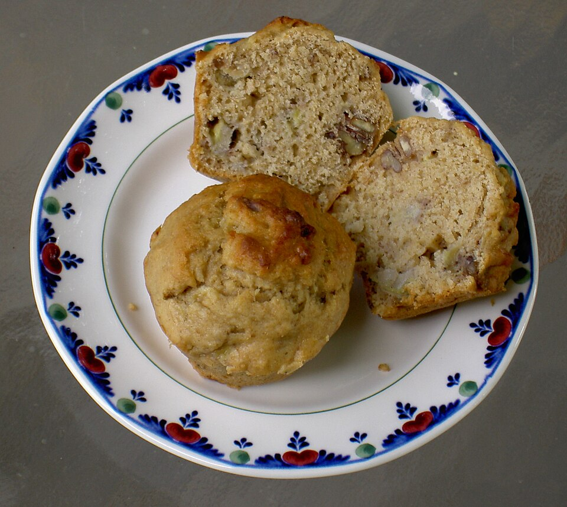

Banana Nut Muffins

Description
This recipe will make 12 banana nut muffins. One of the best muffin recipes!
Recipe credit goes to allrecipes.com.
Ingredients
- 1 1/2 cups all-purpose flour
- 1 1/2 teaspoons baking powder
- 1/4 teaspoon baking soda
- 1/8 teaspoon salt
- 2 egg whites
- 1 cup mashed bananas
- 1 cup white sugar
- 3 tablespoons vegetable oil
- 1 teaspoon lemon zest
- 1/4 cup chopped walnuts
Steps
- Preheat the oven to 350 degrees F(175 degrees C). Line a 12 cup muffin tin with paper liners.
- In large bowl, stir together flour, baking powder, baking soda, and salt.
- In a medium bowl, whisk egg whites until foamy. Stir in bananas, sugar, oil, and lemon zest. Add flour mixture, stirring just until combined. Stir in walnuts. Fill the prepared muffin cups 2/3 full.
- Bake in the preheated oven until the tops are lightly browned, 20 to 25 minutes. Remove from the oven and transfer muffins to a wire rack to cool.
Photo credit to: Mark Fickett
Link to license
Home Page